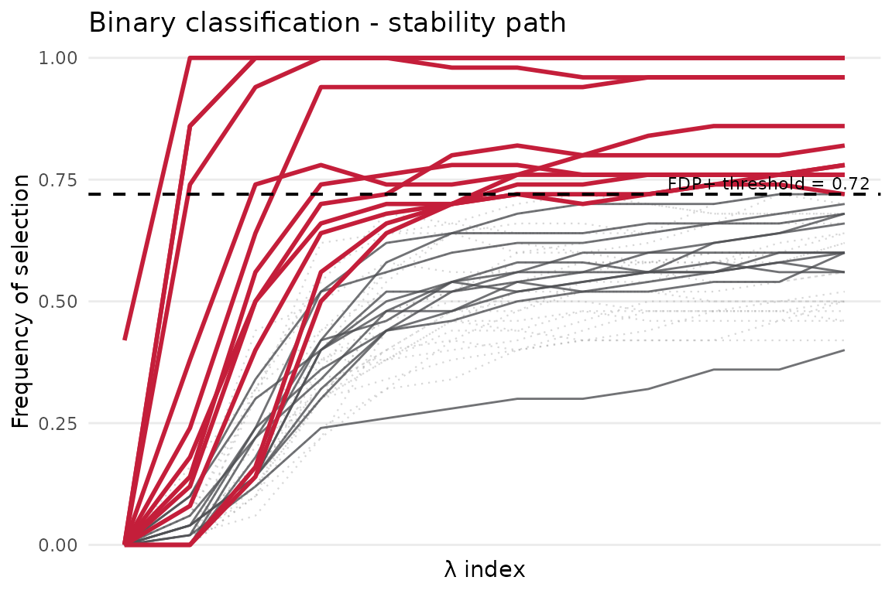
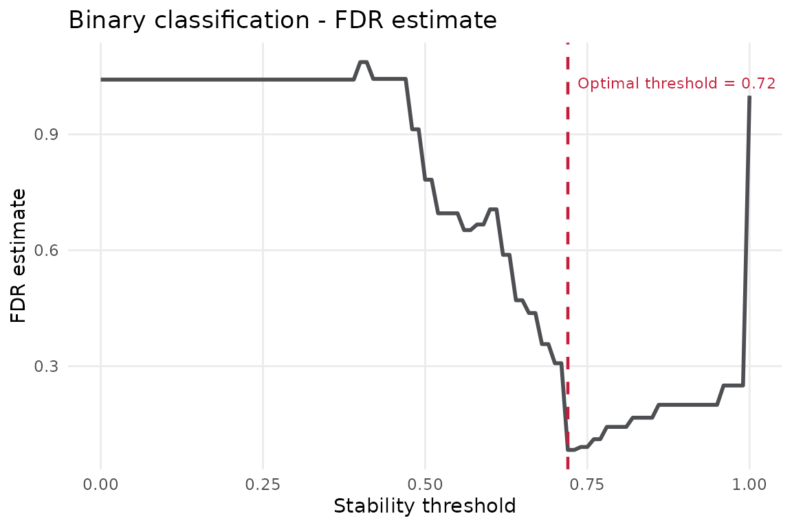
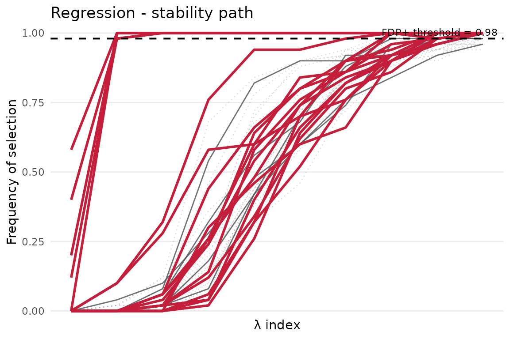

What is STABL?
STABL (Stability-based Thresholding and Aggregation for Biomarker discovery via LASSO) is a bootstrap-based method for reliable sparse feature selection in high-dimensional datasets. It runs many bootstrap resamples of a penalised learner, computes empirical selection probabilities for each feature, and controls the false-discovery proportion (FDP) by comparing real features against artificial decoys.
The stablr package provides a pure-R implementation with
full glmnet-ecosystem compatibility. This vignette is
deliberately the fast path: small simulated data, random-permutation
decoys, and enough bootstraps to show the workflow without making
package builds slow.
Core idea in one sentence: a feature is considered a reliable biomarker if it is selected by the sparse learner consistently across many bootstrap resamples, and its selection frequency is substantially higher than what randomly permuted noise features achieve.
Installation
# From the repository root after cloning:
devtools::install("r-pkg/stablr")
library(stablr)Learning objectives
By the end of this vignette you will be able to:
- Build a compact penalty grid with
auto_lambda_grid(). - Fit a quick STABL model with
stabl_fit()and read the printed summary. - Extract selected features (
get_support()) and ranked stability scores (get_importances()). - Interpret a stability-path plot and an FDR graph.
- Switch between lasso, adaptive lasso, and elastic-net base learners.
1. Binary classification
Simulated data
We generate a 120-sample x 24-feature dataset. Five features (F1-F5) carry a true signal; the remaining 19 are pure noise. Because we know the ground truth, we can verify that the highest-ranked features are the planted signals before moving to real data.
n <- 120; p <- 24; n_signal <- 5
X_bin <- matrix(rnorm(n * p), nrow = n,
dimnames = list(paste0("s", seq_len(n)),
paste0("F", seq_len(p))))
# True signal in the first 5 features
beta_bin <- c(rep(1.5, n_signal), rep(0, p - n_signal))
log_odds <- X_bin %*% beta_bin
y_bin <- rbinom(n, size = 1, prob = plogis(log_odds))
names(y_bin) <- rownames(X_bin)
table(y_bin)
#> y_bin
#> 0 1
#> 63 57The table() output shows the class balance of the
outcome. A roughly 50/50 split is ideal; large imbalances can affect how
the lasso selects features.
Fitting STABL
Step 1 — build a penalty grid.
auto_lambda_grid() uses glmnet to find the
data-dependent range of lambda values. Every row becomes one lambda
configuration evaluated during bootstrapping.
Step 2 — run the bootstrap loop.
stabl_fit() resamples the data n_bootstraps
times, fits the penalised learner at each (lambda, alpha) point, and
records which features are selected. Key arguments:
| Argument | What it does |
|---|---|
family |
Passed to glmnet; "binomial" for 0/1
outcome, "gaussian" for continuous. |
n_bootstraps |
Number of bootstrap resamples. 50 is fine for this quick start; use 500+ for final results. |
artificial_type |
"random_permutation" adds column-permuted decoys;
"knockoff" uses model-X knockoffs for stronger FDP
control. |
random_state |
Integer seed for full reproducibility. |
We use n_bootstraps = 50 and n_lambda = 12
here for a vignette-friendly runtime. The downstream vignettes use real
datasets and slightly larger settings.
lambda_bin <- auto_lambda_grid(X_bin, y_bin, family = "binomial", n_lambda = 12)
fit_bin <- stabl_fit(
x = X_bin,
y = y_bin,
lambda_grid = lambda_bin,
family = "binomial",
n_bootstraps = 50L,
artificial_type = "random_permutation",
random_state = 42L
)
fit_bin
#> <stabl_fit>
#> Features in: 24
#> Features selected: 12
#> Min FDP+: 0.0833
#> FDP+ threshold: 0.72
#> Artificial: random_permutationReading the printed summary — the output reports three key numbers:
-
Stability threshold — the minimum selection
frequency a feature must reach to be called a biomarker
(e.g.
0.7means selected in >= 70% of bootstraps). - n selected — features passing the threshold; for our 5-signal data you expect a small number close to 5.
- FDP estimate — estimated upper bound on the false-discovery proportion among selected features; values well below 0.05 indicate reliable selection.
Inspecting results
get_support() returns the names of features
that exceed the stability threshold — these are your candidate
biomarkers. On this deliberately small example, F1-F5 should dominate
the ranked list even if the exact selected set varies slightly with
platform and glmnet version.
get_importances() returns a named numeric vector of
stability scores (selection frequencies) for all features,
sorted from highest to lowest. A score of 0.8 means the feature was
selected in 80% of bootstraps. The gap between the top entries and the
lower ones shows how cleanly signal features separate from noise.
# Features selected at the STABL threshold
get_support(fit_bin)
#> F1 F2 F3 F4 F5 F6 F7 F8 F9 F10 F11 F12 F13
#> TRUE TRUE TRUE TRUE TRUE TRUE FALSE TRUE TRUE TRUE TRUE FALSE FALSE
#> F14 F15 F16 F17 F18 F19 F20 F21 F22 F23 F24
#> FALSE FALSE TRUE FALSE FALSE FALSE FALSE FALSE TRUE FALSE FALSE
# Stability scores for all features (sorted descending)
head(get_importances(fit_bin), 10)
#> F1 F2 F3 F4 F5 F6 F7 F8 F9 F10
#> 1.00 0.78 1.00 1.00 1.00 0.96 0.58 0.86 0.76 0.76Visualisation
Stability path — each curve traces one feature’s selection frequency as lambda increases (left = weak penalty, many features selected; right = strong penalty, few features selected). Features are coloured by whether they exceed the threshold. Look for a visible gap between the top-scoring cluster and the bulk of near-zero lines: that gap is your signal-to-noise contrast. On the simulated data F1-F5 should form a distinct upper band.
plot_stabl_path(fit_bin, title = "Binary classification - stability path")
FDR graph — the x-axis sweeps candidate thresholds from 0 to 1; the y-axis shows the estimated FDP at each threshold. The dashed vertical line marks the chosen threshold (minimises FDP while keeping at least one feature); the horizontal dashed line is the FDP target (default 0.05). A good result shows the chosen threshold sitting below the FDP target line.
plot_fdr_graph(fit_bin, title = "Binary classification - FDR estimate")
2. Regression
Simulated data
We reuse the same 120 x 24 dimensions but draw an independent feature
matrix and generate a continuous outcome (linear combination of
F1-F5 plus Gaussian noise). The only change to the fitting workflow is
family = "gaussian".
Fitting STABL
lambda_reg <- auto_lambda_grid(X_reg, y_reg, family = "gaussian", n_lambda = 12)
fit_reg <- stabl_fit(
x = X_reg,
y = y_reg,
lambda_grid = lambda_reg,
family = "gaussian",
n_bootstraps = 50L,
artificial_type = "random_permutation",
random_state = 42L
)
fit_reg
#> <stabl_fit>
#> Features in: 24
#> Features selected: 19
#> Min FDP+: 0.8421
#> FDP+ threshold: 0.98
#> Artificial: random_permutationResults
The strongest scores should again concentrate on F1-F5. You may notice slightly different stability scores compared to the binary fit — this is expected because the Gaussian loss function changes the effective sparsity of each bootstrap model.
get_support(fit_reg)
#> F1 F2 F3 F4 F5 F6 F7 F8 F9 F10 F11 F12 F13
#> TRUE TRUE TRUE TRUE TRUE TRUE FALSE TRUE TRUE TRUE FALSE TRUE TRUE
#> F14 F15 F16 F17 F18 F19 F20 F21 F22 F23 F24
#> TRUE TRUE TRUE TRUE FALSE TRUE FALSE TRUE TRUE TRUE FALSE
head(get_importances(fit_reg), 10)
#> F1 F2 F3 F4 F5 F6 F7 F8 F9 F10
#> 1.00 1.00 1.00 1.00 1.00 1.00 0.98 1.00 1.00 1.00Visualisation
The stability path should look qualitatively similar to the binary case: F1-F5 curve upward and separate from the noise features. Small differences in curve heights between the two tasks reflect how each family amplifies feature signal.
plot_stabl_path(fit_reg, title = "Regression - stability path")
3. Learner variants
Adaptive lasso
The adaptive lasso re-weights the L1 penalty so that features with small coefficients in a preliminary ridge fit are penalised more heavily. This sharpens the stability contrast: true signal features accumulate higher selection frequencies while noise features are pushed further toward zero.
When to use it: prefer adaptive lasso when you expect a sparse true signal and want a tighter biomarker list with fewer borderline features.
What to expect: get_support(fit_ada)
should return F1-F5, and get_importances() will typically
show higher scores for true features compared to plain lasso.
lambda_ada <- auto_lambda_grid(X_bin, y_bin, family = "binomial", n_lambda = 10)
fit_ada <- stabl_fit(
x = X_bin,
y = y_bin,
lambda_grid = lambda_ada,
base_learner = "adaptive_lasso",
family = "binomial",
n_bootstraps = 40L,
artificial_type = "random_permutation",
random_state = 42L
)
get_support(fit_ada)
#> F1 F2 F3 F4 F5 F6 F7 F8 F9 F10 F11 F12 F13
#> TRUE TRUE TRUE TRUE TRUE TRUE FALSE TRUE FALSE FALSE FALSE FALSE FALSE
#> F14 F15 F16 F17 F18 F19 F20 F21 F22 F23 F24
#> FALSE FALSE TRUE FALSE FALSE FALSE FALSE FALSE TRUE FALSE FALSEElastic net
Elastic net interpolates between lasso (alpha = 1) and ridge (alpha = 0). The L2 component encourages correlated features to be selected together, which is useful when biomarkers form functional modules (e.g. co-expressed genes).
Passing multiple l1_ratio values to
auto_lambda_grid() makes STABL sweep the (lambda, alpha)
grid jointly, exploring both the sparsity level and the L1/L2 mix in
every bootstrap.
When to use it: prefer elastic net over plain lasso when features are highly correlated and you want to avoid arbitrarily picking one representative from a correlated group.
lambda_en <- auto_lambda_grid(
X_bin, y_bin,
family = "binomial", n_lambda = 8,
l1_ratio = c(0.5, 0.9)
)
fit_en <- stabl_fit(
x = X_bin,
y = y_bin,
lambda_grid = lambda_en,
base_learner = "elastic_net",
family = "binomial",
n_bootstraps = 40L,
artificial_type = "random_permutation",
random_state = 42L
)
get_support(fit_en)
#> F1 F2 F3 F4 F5 F6 F7 F8 F9 F10 F11 F12 F13
#> TRUE TRUE TRUE TRUE TRUE TRUE FALSE TRUE FALSE FALSE TRUE FALSE FALSE
#> F14 F15 F16 F17 F18 F19 F20 F21 F22 F23 F24
#> FALSE FALSE TRUE FALSE FALSE FALSE FALSE FALSE FALSE FALSE FALSENext steps
- See
vignette("stablr-multiomic")for a bounded, real-data multi-omic analysis with early and late fusion. - See
?stabl_multiomic_cvfor grouped cross-validation workflows. - See
?save_stabl_resultsfor exporting scores, plots, and selected-feature tables to disk.